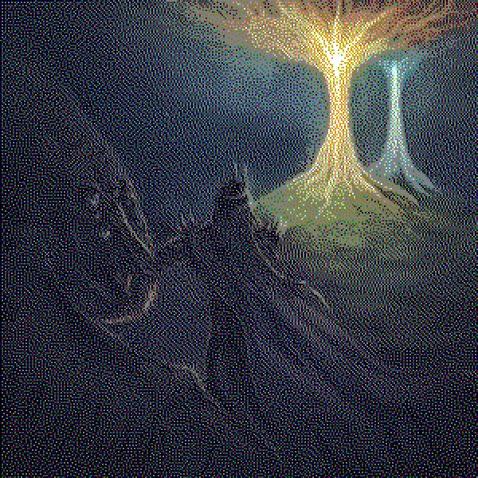

Introduction#
Papyrus is a python obfuscation framework which makes python source code difficult to read and analyze. There is no way to ensure 100% inaccessibility of the source code and there will always be a way to recover the unobfuscated source code, it's the friction that matters.
Papyrus adds so much friction, maximizing the effort required that it is able to discourage most analysts. This writeup explores the specific steps and methods used by Papyrus to achieve source code obfuscation.
Layer 1: The crypter#
What the "crypter" does is obfuscate basic parts of the code like strings, integers, import statements, functions etc. This is done as follows:
Identifier obfuscation
All identifiers like variable names, function names, class names etc are replaced by a randomly generated value which varies in length, starts with the prefix "_0x" and consists only of hexadecimal characters.
This makes reading the names of variables, classes etc and putting things together a little bit harder.
Integer obfuscation
To obfuscate an integer, Papyrus converts it into an algebraic expression consisting of various functions such as addition, subtraction, multiplication and logarithm which when evaluated is equal to the original integer.
The given integer is run through a loop where random integers are chosen and placed in an algebraic expression. An expression such as:
is generated. To ensure that this expression equals the original value, the difference between the value of this expression at the end of the loop and the original integer is added to the expression.
For example, if the expression comes out to be 21 and our original integer was 25, then 4 is added to the expression. A negative integer is added if the expression is bigger. After the final expression is created which equals the original integer, some parts of the expression, are choosen at random and then converted to hexadecimal, binary, or octal notation.
All these steps make it difficult for static analysis to determine what the original integer was. Example:
Original integer:100
Obfuscated expression:
round(((((26869 + ((((((6 - math.log(933 , 3)) + math.log2(671)) * math.log(269)) - math.log(62 , 5)) ** 6) + -13364277933.771214)) * 40511) - ((((((6 ** 6) * math.log(335 , 5)) * math.log(328)) - math.log2(806)) + math.log(324 , 3)) + -952277.9851441053)) + (4*int('0x157ec' , 16)) + int('-0xe2b2f5ad' , 16) + 0.0) , ((((((0b10010001 & 0b10000) >> 0b1000000) << 0b1110) ^ 0b101100) | 0b10101) - 0b111101))String Literal Obfuscation:
A string literal is converted into an expression which when evaluated during runtime equals the original string.
For example :
The example I gave you makes it look simple and still very much readable, and that's not the only trick Papyrus has up it's sleeves.
Papyrus takes a string, ex: "hello".
Firstly, a Caesar cipher rotation is applied to the entire string, which itself offers little friction but makes the string illegible. Then the string is split into characters that are placed in an equivalent array, so for "hello" that would be
Once our array of characters is ready, noise is added in the form of a prefix, suffix, and at a set interval. The amount of noise added to an array is randomized and makes determining the actual string harder. For example,
Then each character is replaced by an equivalent call to the chr() function with their respective ASCII character codes, like "h" becomes chr(104) and so on.
The integer call to the ord function (for example 104 in the case of "h") is then obfuscated using the integer obfuscation procedure described earlier.
From this, an expression is constructed which when evaluated is equal to the original string.
Example -
Original string:"hello"
Obfuscated expression:
''.join(chr((ord(_0xac1c39da6b96) - int(round(((((int('0x10457' , (0xf1c0c - 0xba9ff) - 0x371fd) - 4073) + ((((((5 ** 5) + math.log(282 , 5)) + math.log(200)) - math.log(74 , 3)) * math.log2(480)) + 3647.4469088026344)) * int('0x42a3' , (0xaca95 - 0x7b958) - 0x3112d)) + (7*51734) + int('-0x5fb376d2' , (0xad454 * 0xb68a9) - 0x7b8d044b64) + 0.0) , ((((((0b10010101 >> 0b101011) & 0b101101) << 0b110011) | 0b11011) ^ 0b1011) - 0b10000))) - int(round(((((int('0xf303' , (0xdf399 + 0x7f66b) - 0x15e9f4) - int('0x978a' , (0xbbdad + 0xa7f2c) - 0x163cc9)) * ((((((8 * math.log2(751)) - math.log(578 , 3)) - math.log(585)) * math.log(980 , 5)) ** 2) + -11340.927528127126)) + ((((((8 ** 5) + math.log(567 , 5)) * math.log(653 , 3)) * math.log(124)) + math.log2(573)) + -858982.1749573654)) + (8*int('0x1581' , (0xbe9bb + 0xce4ae) - 0x18ce59)) + int('-0x59bc2465' , (0xe234b + 0xf238d) - 0x1d46c8) + 0.0) , (((0b10111 | 0b101000) << 0b11000) - 0b111111000000000000000000000000)))) % int(round(((((int('0x704f' , 0x8f42f + -0x8f41f) * ((((((8 ** 4) - math.log(189)) - math.log(570 , 5)) - math.log(524 , 3)) - math.log2(32)) + 60752.88396791632)) - 17317) + ((((((8 * math.log2(824)) ** 5) + math.log(468 , 5)) * math.log(403 , 3)) - math.log(785)) + -15258535100.419416)) + (8*92249) + int('-0x6f249af0' , (0xb7fee * 0xab14e) + -0x7af6408874) + 0.0) , (((((0b11011001 ^ 0b101011) << 0b1111) | 0b11101) & 0b101) - 0b101))) + int(round(((((int('0x4e2a' , 0xda2f8 + -0xda2e8) - int('0xeb37' , (0xde29a + 0x7faa0) + -0x15dd2a)) * ((((((6 ** 2) + math.log(514 , 5)) + math.log2(729)) + math.log(526)) * math.log(910 , 3)) + 25606.843988369546)) + ((((((6 + math.log(452 , 5)) + math.log2(561)) + math.log(749)) ** 4) - math.log(564 , 3)) + -363048.65280602593)) + (5*1852) + int('0x3e2febcf' , ((0x7f723 - 0xa946f) * 0xb4b1b) - -0x1d869fdb14) + 0.0) , ((((((0b1001001 >> 0b111100) ^ 0b111100) & 0b10) << 0b100010) | 0b100001) - 0b100001)))) if _0xac1c39da6b96.islower() else chr((ord(_0xac1c39da6b96) - int(round(((((52278 * int('0xca55' , (0xc8c78 + 0xd1bde) - 0x19a846)) - ((((((7 * math.log(180 , 5)) - math.log(969)) * math.log2(750)) - math.log(345 , 3)) ** 3) + -3030256.0137615334)) + ((((((5 * math.log2(43)) * math.log(46 , 5)) ** 4) - math.log(196 , 3)) * math.log(383)) + -103117313.5486789)) + (8*int('0x14395' , (0x90bba + 0xa531a) + -0x135ec4)) + int('-0xa171fd94' , 0xef894 + -0xef884) + 0.0) , (((((0b11101011 >> 0b10111) & 0b11111) << 0b111101) ^ 0b111001) - 0b111001))) - int(round(((((55119 * int('0xe87c' , 0xb21f2 + -0xb21e2)) + ((((((10 * math.log(512 , 5)) + math.log2(725)) + math.log(36)) ** 3) + math.log(909 , 3)) + -133740.6354887158)) - ((((((7 - math.log(22 , 3)) + math.log2(446)) ** 6) + math.log(506)) + math.log(720 , 5)) + -4782717.973501156)) + (6*28483) + int('-0xc38a55ab' , 0x8b4bd + -0x8b4ad) + 0.0) , ((((((0b10011111 ^ 0b110111) >> 0b110010) | 0b100010) << 0b10110) & 0b110110) - 0b0)))) % int(round(((((int('0x34b3' , 0xe93a7 - 0xe9397) - ((((((10 + math.log2(862)) ** 2) * math.log(198)) + math.log(964 , 5)) + math.log(120 , 3)) + 25191.29578371795)) * ((((((5 - math.log(902 , 5)) ** 6) * math.log(161)) - math.log2(610)) + math.log(735 , 3)) + 69529.16905109525)) + int('0x158ae' , 0xcdb53 - 0xcdb43)) + (4*66525) + int('0x390d474c' , 0xcd0d4 - 0xcd0c4) + 0.0) , (((0b1011110 | 0b101101) & 0b100001) - 0b100001))) + int(round(((((13284 + 80597) * ((((((5 + math.log(946 , 5)) - math.log(358 , 3)) * math.log(740)) ** 3) * math.log2(815)) + -122472.56167908243)) - int('0x11962' , 0x7e17a + -0x7e16a)) + (4*int('0x1184b' , 0x8beae - 0x8be9e)) + int('-0xf3cd7580' , 0xe5be1 - 0xe5bd1) + 0.0) , (((((0b1011101 >> 0b1011) | 0b111100) ^ 0b111010) << 0b101000) - 0b11000000000000000000000000000000000000000000000000000)))) if _0xac1c39da6b96.isupper() else _0xac1c39da6b96 for _0xac1c39da6b96 in [ chr(int(round(((((79157 + ((((((8 + math.log(250 , 3)) + math.log2(867)) ** 5) - math.log(76)) - math.log(537 , 5)) + -6122233.833029851)) * int('0x14a3b' , 0xf0ed5 + -0xf0ec5)) - ((((((9 ** 3) + math.log(517 , 5)) * math.log(452)) * math.log(627 , 3)) - math.log2(823)) + 14430.763963504356)) + (8*int('0xe667' , (0x8392f * 0x7c739) + -0x3ff6914467)) + int('-0x1f2dbbb69' , ((0xd1fe6 + 0xe0c7d) - 0xd5b2e) + -0xdd125) + 0.0) , (((((0b110010 | 0b10000) & 0b11101) >> 0b1001) ^ 0b100000) - 0b100000)))) , chr(int(round(((((98898 * ((((((6 + math.log(806 , 3)) - math.log(487)) + math.log(376 , 5)) * math.log2(426)) ** 6) + -344900760703.079)) - ((((((8 - math.log(308 , 5)) * math.log(690)) ** 4) - math.log2(843)) * math.log(583 , 3)) + -4059548.4608681737)) + ((((((8 ** 3) + math.log(728)) - math.log(909 , 5)) + math.log(971 , 3)) + math.log2(944)) + 12402.498881330745)) + (6*27794) + int('-0x1d4c8bb02' , (((0xabba9 + 0x823d9) * 0x8c44d) - 0x9ee5c) + -0xa574d2d3ae) + 0.0) , (((((0b10110111 | 0b11110) << 0b100101) >> 0b1011) ^ 0b1111) - 0b1011111100000000000000000000001111)))) , chr(int(round(((((22523 - ((((((10 ** 4) + math.log(548)) * math.log(915 , 3)) - math.log(450 , 5)) + math.log2(95)) + -41875.43776113078)) + int('0x897f' , 0xc9055 - 0xc9045)) * 80628) + (6*int('0xffaf' , (0x91f16 * 0xbffab) + -0x6d7200ada2)) + int('-0xb42db573' , 0x8c312 + -0x8c302) + 0.0) , ((((0b100100 >> 0b111001) ^ 0b1101) | 0b111) - 0b1111)))) , chr(int(round(((((93456 - ((((((7 - math.log2(543)) ** 3) * math.log(943 , 3)) * math.log(601)) * math.log(698 , 5)) + 39641.68257357924)) * 29448) + ((((((7 * math.log2(131)) ** 5) - math.log(742)) * math.log(955 , 3)) + math.log(50 , 5)) + -1806805870.7448173)) + (9*44274) + int('-0x610fe8f0' , 0xf1bce + -0xf1bbe) + 0.0) , (((((0b1000110 ^ 0b110110) << 0b10000) | 0b110110) & 0b10101) - 0b10100)))) , chr(int(round(((((91479 - int('0x2c48' , (0x9a4f7 * 0x94da8) - 0x59b9a18d08)) + ((((((9 - math.log(281 , 5)) ** 3) + math.log(635)) - math.log(502 , 3)) - math.log2(439)) + 42429.909771213475)) * ((((((9 + math.log(32 , 3)) - math.log(543)) + math.log(210 , 5)) - math.log2(544)) ** 3) + 78598.99921056491)) + (4*int('0xfd5a' , 0x9e29f + -0x9e28f)) + -9646793188 + 0.0) , (((((0b11001111 & 0b10100) >> 0b110100) | 0b11000) ^ 0b111) - 0b11111)))) , chr(int(round(((((42225 * ((((((10 - math.log(633 , 5)) + math.log(454)) - math.log2(503)) ** 3) - math.log(699 , 3)) + 87418.12726015919)) - int('0x4d1a' , ((0xa7d85 + 0xe7a13) - 0xd6d22) + -0xb8a66)) + ((((((9 ** 5) * math.log2(516)) + math.log(909)) - math.log(426 , 5)) * math.log(582 , 3)) + -3081193.0414171843)) + (8*int('0x3d' , (0xd801c * 0xc7a91) - 0xa87802e7cc)) + int('-0xdc137908' , 0x9229c + -0x9228c) + 0.0) , ((((((0b1110010 >> 0b10) << 0b11110) ^ 0b101101) & 0b100001) | 0b100011) - 0b100011)))) , chr(int(round(((((52841 - int('0x12b42' , 0xaf481 + -0xaf471)) + 52470) * ((((((5 ** 5) * math.log2(767)) + math.log(694)) - math.log(636 , 5)) - math.log(44 , 3)) + -19922.220762184465)) + (8*22268) + int('-0x1128a6f3' , ((0xd286f * 0xa265c) + 0x7a2e0) - 0x858d18a4b4) + 0.0) , (((((0b11100110 & 0b11000) >> 0b111) ^ 0b10011) | 0b110100) - 0b110111)))) , chr(int(round(((((67069 + ((((((5 * math.log(923 , 5)) - math.log(625)) + math.log2(623)) ** 2) - math.log(83 , 3)) + 34025.304146052054)) - int('0x16808' , (0x8a486 - 0xd09b7) - -0x46541)) * ((((((9 + math.log(734)) - math.log(148 , 3)) * math.log2(635)) ** 2) - math.log(445 , 5)) + -2524.6861746038303)) + (3*int('0x78d' , (0x97d5e + 0x851cd) + -0x11cf1b)) + int('-0x48ffeca' , (0x93061 - 0xdf1f9) - -0x4c1a8) + 0.0) , (((((0b10111111 >> 0b1110) ^ 0b11) | 0b11) & 0b110110) - 0b10)))) , chr(int(round(((((int('0x5c56' , ((0x93566 * 0x7a282) + 0x7c4cf) + -0x464e496e8b) * int('0x24b2' , (0xd493b + 0xa3594) + -0x177ebf)) - ((((((7 * math.log(59 , 5)) ** 4) - math.log(809)) * math.log2(717)) - math.log(890 , 3)) + -849336.9635553833)) + 8623) + (5*int('0x17b9d' , 0x84a8e - 0x84a7e)) + int('-0xd427baa' , 0x80fb3 - 0x80fa3) + 0.0) , ((((0b10101 & 0b101110) | 0b100110) >> 0b1010) - 0b0)))) ][int(round(((((int('0x4396' , (0x8aa42 + 0xf3a44) - 0x17e476) * 16562) + 73829) - int('0xd3e7' , ((0x92a04 + 0xb7d4b) - 0x7fc66) - 0xcaad9)) + (7*88058) + -287191708 + 0) , ((((((0b11101101 >> 0b11) & 0b1100) | 0b1111) << 0b110111) ^ 0b100110) - 0b11110000000000000000000000000000000000000000000000000100110)))::int(round(((((36047 - 43658) + int('0x11863' , 0xc6ef2 - 0xc6ee2)) * int('0x6b0c' , 0xef433 - 0xef423)) + (4*int('0x14b0e' , 0x8c66f + -0x8c65f)) + int('-0x68d52417' , 0xe248e - 0xe247e) + 0) , (((((0b11010111 | 0b100111) >> 0b111011) << 0b1001) ^ 0b1010) - 0b1010)))])As you can probably tell by seeing the example, this approach isn't very feasible for long strings due to the size explosion. For long strings (strings longer than 50 chars) Papyrus employs a different technique.
Papyrus takes a long string, for the sake of this explanation, we consider the example "hello" even though it isn't a long string. Then, just like normal strings, noise is added to the string, but unlike the normal procedure, the string (with noise) is XORed with a randomly generated key.
Then this encrypted string with noise is represented in its hex byte form, making it harder to decipher.
While not offering as much friction as the other method, this technique too makes it difficult to decipher strings from static analysis alone, while preventing size explosion. Example:
Original string:hello
Obfuscated expression:
getattr(bytes(_0x9f1e161d370e ^ _0xe11aaf80c7cbaa17 for _0x9f1e161d370e, _0xe11aaf80c7cbaa17 in zip(b',\x04\xbe\xa4";r\x91\xb47W\xe2\xddQ&(\xb4\x92Z\xf4k #Mk\xd5[\xa2\r\x92.\x86,m', b'Xb\xdd\xc1[m3\xe4\xf7m6\x84\x999CD\xd8\xfd9\xb6$IZ\x0c\x04\xb9\x1c\xea\x7f\xd5w\xfcZ(')) , '\x70\x57\x41\x62\x59\x6b\x74\x42\x6e\x64\x4b\x65\x4e\x63\x4f\x6f\x79\x64\x74\x65\x4d\x53\x53\x62\x79\x4d'[0x7c84a + -0x7c841:(0xc9443 - 0xf2feb) + 0x29ba3:0xf0a26 - 0xf0a24])()[(0xf038d + 0xba2af) - 0x1aa62f:(0xa79a8 * 0xef58e) + -0x9cb36d4340:(0xa52f8 * 0xc11f4) - 0x7c9cf98c5f]Float obfuscation:
Float obfuscation is done differently than integer obfuscation because there is a loss of some floating-point digits due to mathematical operations like logarithm not being exact in computers.
Floats are obfuscated by turning them into a string, obfuscating it using the long string obfuscation procedure, and putting it in an eval() function. The function is called dynamically using getattr() to provide some extra friction.
Original float:0.234
Expression:
getattr(__builtins__ , getattr(bytes(_0x4e4178ab3e0c ^ _0x67dc for _0x4e4178ab3e0c, _0x67dc in zip(b'\x8f\xafY=\xfb\xc1_\xc4\x87\xce\x90U\xd0\xbb4Ik\xdeb2\xf8-\x18\xd8G\xf8Nd\xc0\x95^\xd7\xa4`\xea\x84\x9f\xd5', b'\xcb\xc1\x0fR\x97\x82\x0b\xad\xcb\xad\xd7\x1b\x93\xde{?3\xbf\x17^\xb1nI\x95*\x91\x18\x17\xae\xf21\x9f\xd2!\x80\xce\xe5\x91')) , '\x69\x7a\x41\x6b\x54\x4a\x47\x6c\x64\x6b\x65\x50\x63\x4a\x6f\x46\x64\x75\x65\x65\x73\x71\x52\x47\x72\x6d\x74\x43\x44'[((0xd0c7c + 0xac72d) * 0xdb709) + -0x146c8b93fe9:(0xcffba * 0xe3b79) - 0xb90140bcf3:((0xebe6c * 0xc73ff) - 0xeb71f) + -0xb79b3b7a73])()[0xebff8 + -0xebfeb:(0xa79f4 * 0x99b53) + -0x64a4d0462d:0xc1b79 + -0xc1b77])(getattr(bytes(_0xb031 ^ _0x8b0b4b6abf55 for _0xb031, _0x8b0b4b6abf55 in zip(b'\xcf\x17\xf5\x14x\x95\x08\x7f\t0Zoq\x95\xc6\xae\xed\x93\xdeO&Pb\xfb\xdcm|E\x0c\xc8^\xc4#\xd0~AL\xd5Wy\x13t\xf2dQ\x1a\xb4i\x9d\xc8*a\x03@\xbe\xbfl\xf3\xb1\xd4y\x88J\x83\x8e"\xe2\x9b\x91C=.\x84Z', b'\xbdz\x99F9\xd1~&`S\x03?"\xf3\xb1\xe8\x8e\xc6\x99\x16G\x1e\x05\xb9\x9f*\x087G\x8b\x15\xb4B\xb3N)\x1e\x9by\x1fx\x03\xc0&\x1eT\x873\xc9\x91\x1e\x13I\x17\xf8\xcb(\xb1\xf9\xb2>\xff=\xed\xcfh\xaa\xcf\xe9&WY\xdc\x08')) , '\x76\x76\x78\x64\x46\x65\x42\x63\x76\x6f\x67\x64\x55\x65\x4a\x67\x49\x59'[(0x9ed31 - 0xf1187) + 0x52459:0xa7aa6 - 0xa7aa9:0xc675e + -0xc675c])()[(0xdfc8b * 0xe1a36) + -0xc53e336330:(0x99fe6 + 0x7e771) + -0x11876b:0xbe39e + -0xbe39a])Import obfuscation:
Papyrus obfuscates Python imports by using dynamic imports. The name of the module/script being imported is converted into a string.
This string is then obfuscated using the long string obfuscation method, and the module is dynamically imported by feeding the obfuscated expression to __import__().
The function is also given a new alias inside the code which is generated using the identifier obfuscation technique. All imports in a file are jumbled, which makes it hard to determine which alias corresponds to which imported modules.
Boolean obfuscation:
Booleans are obfuscated in a way similar to integers. They are converted into boolean algebra expressions which when evaluated are equal to the original boolean.
It is done in the exact same way as an integer, but instead of numbers, there are boolean values (True, False), and instead of algebraic operations, there are boolean operations like AND, OR, NOR, NAND etc.
However, these boolean values (True, False) themselves are represented as comparisons between two integers, like True can be written as 3>2. The numbers in this numerical comparison themselves undergo a miniature version of integer obfuscation.
Original boolean:True
Obfuscated expression:
((((((0x7ab2e - -0x2b6ded < (0xb5b8d - 0x7f632) - -0x2ff3f7) or (0xcfbcf + 0x4e8a92 > 0xc0ffa + 0x1de847))) and (0xd34a5 - -0x2213e5 < (0xf1089 + 0xde0d9) - -0x521884))) ^ ((0xa3794 + 0xe0d09) - -0x6b89e3 < (0x8752c + 0xb108f) - -0x1be83a))So that will be how the first layer, the crypter, works. Papyrus uses the Python AST to traverse through the code and replace each of these values with an obfuscated expression or identifier.
Layer 2: Compression#
The compression layer obfuscates the code further by running it through the LZMA data compression algorithm. This not only makes the code difficult to read but also reduces its size.
The compression layer treats the entire code (which has been crypted by now) as a string. This big string is then written as a base85 encoded string.
Then it runs this base85 encoded string through the LZMA compression algorithm and outputs an expression of decompression, which when executed is equal to the original code.
It also adds the necessary modules, i.e., LZMA and base64 to the file, using import obfuscation techniques described earlier.
Layer 3: Anti Analysis#
The anti analysis layer adds additional code snippets to the main source code (which is now compressed and obfuscated by the crypter). These code snippets detect the presence of virtual environments, debuggers, sandboxes, and more and hinder analysis.
Some of the snippets which are added to the source code, and what they exactly do to prevent analysis are given below:
(The <|PLACEHOLDER FOR ANALYSIS DETECTION CODE|> is replaced by whatever code the user wants to execute if an analysis environment is detected)
1) Debugger detection
import sys
if sys.gettrace() is not None:
<|PLACEHOLDER FOR ANALYSIS DETECTION CODE|>This code snippet looks for the current trace function. Trace functions are often used by debuggers and profilers to monitor code execution.
If there is an active trace function, sys.gettrace() returns a non-None value.
2) Stack frame analysis
analysis_tools = ['pydevd', 'ptvsd', 'pdb', 'ipdb', 'rpdb', 'wdb', 'debugpy', 'pydbg', 'pytrace', 'pyinspector', 'pydev', 'pycharm-debug', 'pycharm_debugger', 'pyringe', 'celery.worker', 'bpdb', 'pytest', 'nose', 'unittest', 'doctest', 'trace', 'cProfile', 'profile', 'line_profiler', 'memory_profiler', 'pyinstrument', 'yappi', 'pyvmmonitor', 'bpython', 'ipython', 'jupyter_client', 'jupyter_core', 'tox', 'pyvmmonitor', 'vprof', 'pympler', 'objgraph', 'pycallgraph', 'coverage', 'mypy', 'pylint', 'flake8', 'bandit', 'radon', 'pyflame', 'pyspy', 'strace', 'ltrace', 'ptrace', 'sysdig']
import inspect
for frame in inspect.stack():
for tool in analysis_tools:
if tool in frame.filename:
<|PLACEHOLDER FOR ANALYSIS DETECTION CODE|>This snippet looks through the call stack for analysis-related modules and tools. The code iterates through the stack frame by frame and looks into the filename of each stack frame for mentions of analysis tools.
3) Env detection
import os
import hashlib
import zlib
analysis_env_vars = ["776278249","1111888327","1367806477","1170543018","1998787301","1087705466","452071581","1378423221","1242567102","1493045800","857477574","1318850996","4033155066","3990491076","1786647183","1052643804","1658131022","902697418","830476603","332533825","1313214994","809767329","1602490858","539562146","1700860593","274862286","908726710","1338315219","1275007458","784077075","998773027","1613239041","2099974920","1493832183","1404440972","1215893910","1049104847","1092751688","227086589","1019482442","767037780","519835822","532353308","1341788554","999428540","323227797","1928467300","1227362987","1135481458","1593381504","1306202625","1049760197","578752673","1518146152","1329992174","425005245"]
virtualization_indicators = ["1717900002","707072256","808456527","541593886","1830621725","1091703215","587600270","535761121","2048529078","1181225349","461115608","419827880"]
all_env_vars = analysis_env_vars + virtualization_indicators
for key in os.environ.keys():
if str(zlib.adler32(hashlib.sha256(key.encode()).hexdigest().encode())) in all_env_vars:
<|PLACEHOLDER FOR ANALYSIS DETECTION CODE|>This code tries to detect analysis or virtualized environments by looking through the environment variables. It hashes the environment variables using SHA256 and then Adler32 and compares it to a list of known suspicious environment variables.
The names are hashed instead of being in clear text to add extra friction.
4) Time-based detection
import datetime
import time
stat_max = 0.018253
threshold = 0.018253 + (0.018253*0.5) #50%
detect_score = 0
for i in range(3):
now = datetime.datetime.now()
time.sleep(0.01)
diff = datetime.datetime.now() - now
if float(str(diff).split(":")[-1]) > threshold:
detect_score = detect_score + 1
if detect_score > 2:
<|PLACEHOLDER FOR ANALYSIS DETECTION CODE|>This code snippet attempts to detect debugging, virtualization, or system slowdowns by measuring the accuracy of sleep timing.
If the actual sleep duration is significantly higher than expected, it may indicate that the program is running in a debugger, virtual machine, or sandboxed environment.
5) Uptime check
import ctypes
import platform
import hashlib
if hashlib.sha256(platform.system().encode()).hexdigest().lower() == "d598026a9cbc60505f138ce53ac78088d582100c196d0f70c7e2538d4a8d7e10":
import ctypes
lib = ctypes.windll.kernel32
uptime = lib.GetTickCount64()
uptime = int(str(uptime)[:-3])
if uptime < 7200:
<|PLACEHOLDER FOR ANALYSIS DETECTION CODE|>
else:
import subprocess
result = subprocess.run(["uptime", "-s"], capture_output=True, text=True, check=True)
from datetime import datetime
uptime_start = datetime.strptime(result.stdout.strip(), "%Y-%m-%d %H:%M:%S")
current_time = datetime.datetime.now()
uptime_seconds = (current_time - uptime_start).total_seconds()
if uptime_seconds < 7200:
<|PLACEHOLDER FOR ANALYSIS DETECTION CODE|>This script attempts to detect sandboxed, forensic, or virtualized environments by checking the system uptime. If the uptime is less than 2 hours (7200 seconds), it assumes the system might be a sandbox or test environment.
It also detects the operating system it is running on to execute the necessary commands to get access to the uptime. The name of the OS has been hashed using SHA256 because I felt like that while writing the code (I forgot the exact reason I did that, maybe to increase friction).
There are 5 other snippets aside from these which try to detect analysis using different metrics such as:
--> Mac address check
--> HWID check
--> Username check (The VirusTotal sandbox had the username TEQUILABOOMBOOM for a long time)
--> Disk size check
--> Module inspection
Layer 4: Encryption#
Just like the compression layer, this layer too treats the source code as a single big string. This string is then XORed with a random key for encryption and returns a decryption expression which is equal to the original code.
However, instead of the decryption expression containing the key itself, it contains a set keyspace and the hash of the correctly decrypted code.
The key is derived by first choosing two random numbers which are at a certain number away from each other. Then a random number is chosen between these two numbers, and the key is the SHA256 hash of this number.
The decryption function has to search through this keyspace for the appropriate key at the time of execution. This leads to delayed execution and also renders static analysis pretty much useless.
Layer 5: Polymorphism and anti entropy#
This is the final layer. It consists of two parts: the polymorphism part and the anti-entropy part.
Polymorphism
The polymorphism part takes the source code and makes it client-side polymorphic so that the script changes itself every time it is run. It does this by XORing the source code with a random XOR key, which is changed every time the script is run, and the script overwrites itself when it is run.
Anti entropy
Before we discuss the anti-entropy part, we must discuss what entropy is and entropy-based detection.
Entropy in this context refers to Shannon entropy, which defines the average "surprise" or "randomness" of data. It was introduced by Claude Shannon in his 1948 paper "A Mathematical Theory of Communication".
The more random the data, the higher the entropy. Conversely, structured or repetitive data has lower entropy. For example, a string "AAAAAA" has very low entropy, while on the other side, random or encrypted text has very high entropy. (Encrypted text has higher entropy due to diffusion which is present in almost all modern cryptographic algorithms)
This measure is often used by antivirus and EDR software to detect malicious software.
To prevent our code from being detected by entropy-based techniques, this layer represents the final source code by encoding it using run-length encoding or LZW (Lempel-Ziv-Welch) encoding. These encoding techniques reduce the entropy of the code, which makes entropy-based obfuscation techniques less effective.
Conclusion#
So this was a short overview of how Papyrus works. If you have any questions, suggestions, or just want to talk, contact me on Twitter (@0xApollyon) or on Discord (0xapollyon)